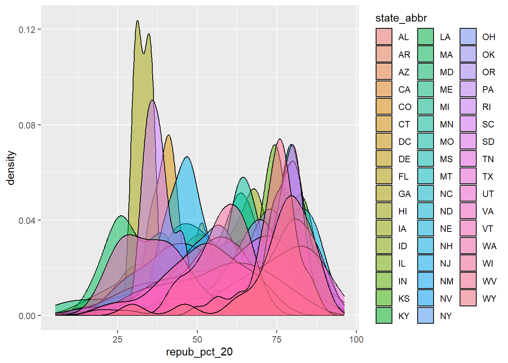
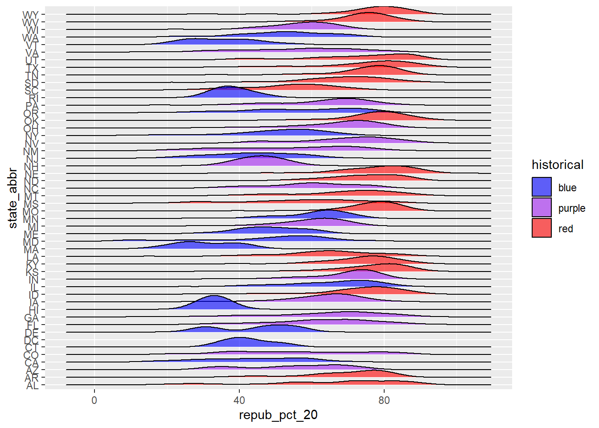
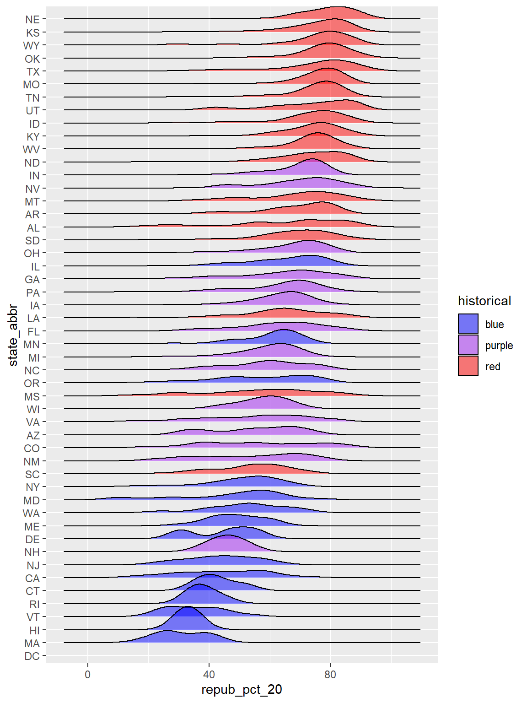
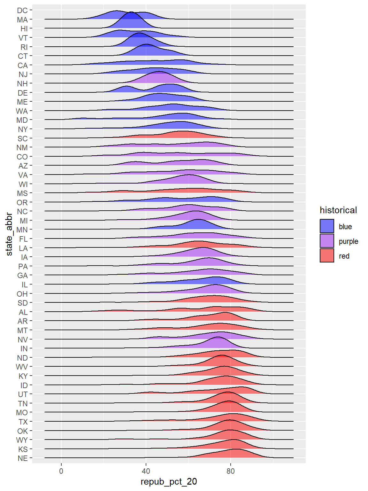

state_abbr historical county_name total_votes_20 repub_pct_20 dem_pct_20
1 AL red Autauga County 27770 71.44 27.02
2 AL red Baldwin County 109679 76.17 22.41
3 AL red Barbour County 10518 53.45 45.79
4 AL red Bibb County 9595 78.43 20.70
5 AL red Blount County 27588 89.57 9.57
6 AL red Bullock County 4613 24.84 74.70
dem_support_20
1 low
2 low
3 low
4 low
5 low
6 high
# ordered in alphabetical order (high, low, medium) and not in order of support :(
Example 2
# Notice that the order of the levels is not alphabetical!elections <- elections |>mutate(dem_support_20 =fct_relevel(dem_support_20, c("low", "medium", "high")))# dem_support_20 is now a factorstr(elections)
dem_support_20 n
1 low 2494
2 medium 157
3 high 458
# We can redefine any number of the category labels.# Here we'll relabel all 3 categories:elections <- elections |>mutate(results_20 =fct_recode(dem_support_20, "strong republican"="low","close race"="medium","strong democrat"="high"))# Check it out# Note that the new category labels are still in a meaningful,# not necessarily alphabetical, order!elections |>count(results_20)
results_20 n
1 strong republican 2494
2 close race 157
3 strong democrat 458
Example 4
# Note that we're just piping the data into ggplot instead of writing# it as the first argumentelections |>ggplot(aes(x = repub_pct_20, fill = state_abbr)) +geom_density(alpha =0.5)
Warning: Groups with fewer than two data points have been dropped.
Warning in max(ids, na.rm = TRUE): no non-missing arguments to max; returning
-Inf

# make a ridge plot b/c so many overlapping density plots library(ggridges)elections |>ggplot(aes(x = repub_pct_20, y = state_abbr, fill = historical)) +geom_density_ridges(alpha =0.6) +scale_fill_manual(values =c("blue", "purple", "red"))
Picking joint bandwidth of 4.43

Example 5
# reorder levels based on another variable# here, we will reorder states according to their typical GOP support elections |>mutate(state_abbr =fct_reorder(state_abbr, repub_pct_20,.fun ="median")) |>ggplot(aes(x=repub_pct_20, y=state_abbr, fill=historical))+geom_density_ridges(alpha =0.5)+scale_fill_manual(values =c("blue", "purple", "red"))
Picking joint bandwidth of 4.43

# How did the code change?# We put fct_reorder(var, var)# And the corresponding output?# The ridge plots were ordered by republican support, low to highelections |>mutate(state_abbr =fct_reorder(state_abbr, repub_pct_20, .fun ="median", .desc =TRUE)) |>ggplot(aes(x = repub_pct_20, y = state_abbr, fill = historical)) +geom_density_ridges(alpha=0.5) +scale_fill_manual(values =c("blue", "purple", "red"))
Picking joint bandwidth of 4.43

Exercises
# Get rid of some duplicate rows!grades <-read.csv("https://mac-stat.github.io/data/grades.csv") |>distinct(sid, sessionID, .keep_all =TRUE)# Check it outhead(grades)
---title: "Factors"format: html---Use this file for practice with the **factors** in-class activity. Refer to the class website for details.## Examples {.unnumbered}### Example 1 {.unnumbered}```{r}library(tidyverse)elections <-read.csv("https://mac-stat.github.io/data/election_2020_county.csv") |>select(state_abbr, historical, county_name, total_votes_20, repub_pct_20, dem_pct_20) |>mutate(dem_support_20 =case_when( (repub_pct_20 - dem_pct_20 >=5) ~"low", (repub_pct_20 - dem_pct_20 <=-5) ~"high",.default ="medium" ))# Check it outhead(elections) ``````{r}ggplot(elections, aes(x = dem_support_20)) +geom_bar()# ordered in alphabetical order (high, low, medium) and not in order of support :(```### Example 2 {.unnumbered}```{r}# Notice that the order of the levels is not alphabetical!elections <- elections |>mutate(dem_support_20 =fct_relevel(dem_support_20, c("low", "medium", "high")))# dem_support_20 is now a factorstr(elections)# plotggplot(elections, aes(x=dem_support_20))+geom_bar()```### Example 3 {.unnumbered}```{r}elections |>count(dem_support_20)# We can redefine any number of the category labels.# Here we'll relabel all 3 categories:elections <- elections |>mutate(results_20 =fct_recode(dem_support_20, "strong republican"="low","close race"="medium","strong democrat"="high"))# Check it out# Note that the new category labels are still in a meaningful,# not necessarily alphabetical, order!elections |>count(results_20)```### Example 4 {.unnumbered}```{r}# Note that we're just piping the data into ggplot instead of writing# it as the first argumentelections |>ggplot(aes(x = repub_pct_20, fill = state_abbr)) +geom_density(alpha =0.5)``````{r}# make a ridge plot b/c so many overlapping density plots library(ggridges)elections |>ggplot(aes(x = repub_pct_20, y = state_abbr, fill = historical)) +geom_density_ridges(alpha =0.6) +scale_fill_manual(values =c("blue", "purple", "red"))```### Example 5 {.unnumbered}```{r, fig.width=6, fig.height=8}# reorder levels based on another variable# here, we will reorder states according to their typical GOP support elections |> mutate(state_abbr = fct_reorder(state_abbr, repub_pct_20,.fun = "median")) |> ggplot(aes(x=repub_pct_20, y=state_abbr, fill=historical))+ geom_density_ridges(alpha = 0.5)+ scale_fill_manual(values = c("blue", "purple", "red"))``````{r, fig.width=6, fig.height=8}# How did the code change?# We put fct_reorder(var, var)# And the corresponding output?# The ridge plots were ordered by republican support, low to highelections |> mutate(state_abbr = fct_reorder(state_abbr, repub_pct_20, .fun = "median", .desc = TRUE)) |> ggplot(aes(x = repub_pct_20, y = state_abbr, fill = historical)) + geom_density_ridges(alpha=0.5) + scale_fill_manual(values = c("blue", "purple", "red"))```## Exercises {.unnumbered}```{r}# Get rid of some duplicate rows!grades <-read.csv("https://mac-stat.github.io/data/grades.csv") |>distinct(sid, sessionID, .keep_all =TRUE)# Check it outhead(grades)``````{r}grade_distribution <- grades |>count(grade)head(grade_distribution)```### Exercise 1 {.unnumbered}```{r}# a column plot (height of the bar is based on a variable in the dataset)grade_distribution |>ggplot(aes(x=grade, y=n))+geom_col()``````{r}# reorder gradesgrade_distribution |>mutate(grade =fct_relevel(grade, c("A", "A-", "B+", "B", "B-", "C+", "C", "C-", "D+", "D", "D-", "NC", "S","AU"))) |>ggplot(aes(x=grade, y=n))+geom_col()``````{r}# in order of ascending frequencygrade_distribution |>mutate(grade =fct_reorder(grade, n)) |>ggplot(aes(x=grade, y = n))+geom_col()``````{r}# in order of descending frequencygrade_distribution |>mutate(grade =fct_reorder(grade, n, .desc=TRUE)) |>ggplot(aes(x = grade, y = n))+geom_col()```### Exercise 2 {.unnumbered}```{r, fig.height=5, fig.width=8}grade_distribution |> mutate(grade = fct_relevel(grade, c("A", "A-", "B+", "B", "B-", "C+", "C", "C-", "D+", "D", "D-", "NC", "S", "AU"))) |> mutate(grade = fct_recode(grade, "Audit" = "AU", "Satisfactory" = "S")) |> ggplot(aes(x = grade, y = n))+ geom_col()+ labs(x = "Grade", y = "Number of Students")```